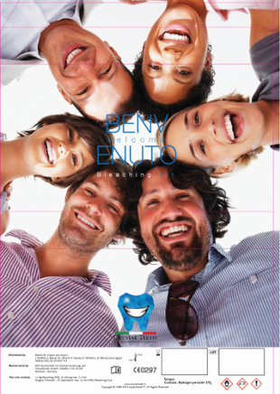
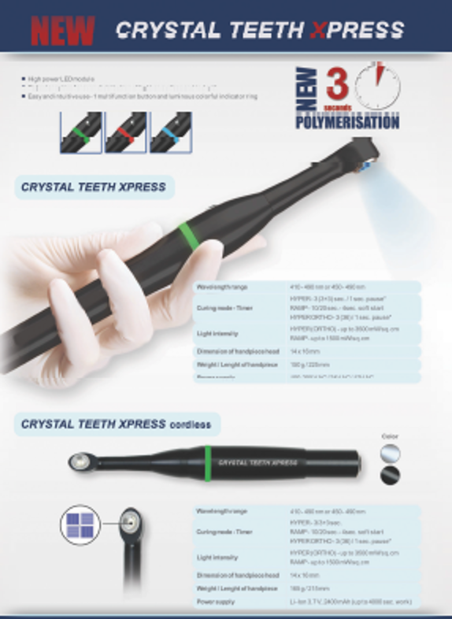
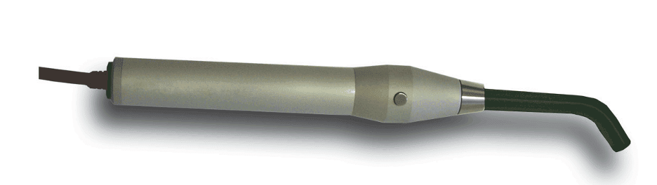
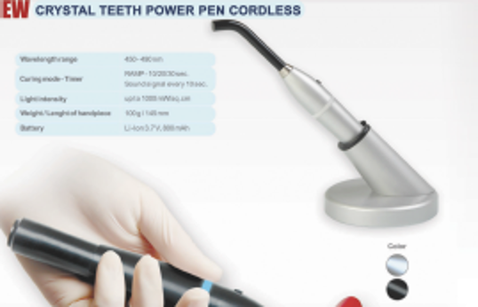

CRYSTAL TEETH offers the best whitening professional range, the most powerful whitening lamps ,complete whitening kits
Our Devices
CRYSTAL TEETH whitening lamps are the strongest with 10 powerful LED modules for higher activation of the bleaching gel and more penetration in the teeth.
- Compatible with the well-known office bleaching systems based on peroxide and carbamide(un coded)
- Pure LED light (430-490 nm), UV and IR free - no need of special protection!
- Timer with pause for choosing the correct time for each patient
- 3 years warranty
- Price :(2400 €mobile)-(2100€ unit mounted)
Our Kits

The complete kit for 3 patients with the special formula fast ,safe and effective for 8
shades whiter:
1 syringe crystal white 35%
1 crystal dam for gingival protection
1 crystal calm to decrease teeth sensitivity if needed
Price :65 € enough for for 3 patients
- CRYSTAL TEETH XPRESS cordless/BUILT IN :
- 3 sec. polymerisation with 4 powerful LED modules
- 3 broadband LEDs covering all photoinitiators in 410-490 nm wavelength range
- Dental pulp protection from overheating - by pause between two consecutive light activations
- Reflector optics for even distribution of light on surface and in depth
- 9 mm light spot - every cavity polymerisation guaranteed
- Lateral emitting of light for maximum comfort and lightguide free work
- 2 curing modes (HYPER, STANDARD) with different light intensity and timer
- Easy and intuitive work - 1 multifunction button and lit colorful indicator ring
- Slim ergonomic body made from special lightweight alloy
- Integrated thermo accumulator (heat sink) for long work without overheating
- Price: 540€
- Warranty: 3 years
- CRYSTAL TEETH LED smart cordless:
- Powerful single high-tech LED module - ensures up to 1300 mW/sq.cm
- Powerful Li-Ion battery with increased capacity – ensures up to 4000 sec. work without recharge
- Digital display and sound signal
- Easy curing mode and timer selection – from handpiece
- Micro fan cooling for long-time procedures
- Polimerization + bleaching in 1 product
- 4 curing modes (RAMP, FAST, LONG, PULSE) for achieving:
- maximum polymerization level
- safe work near dental pulp
- decrease of composite shrinkage
- continuous work during teeth bleaching
- continuous work during brackets fixing
- Last timer and mode setting saving
- Automatic “Sleep mode”
- Intelligent charging base with 4-level light meter - option
- Autoclavable fiberoptic lightguide 8.5 mm
- Protection filter for convenient work
- Wide-angled bleaching lightguide – option
- Price :540€
- Warranty: 3 years
- CRYSTAL TEETH LED pro 220V:
- Powerful single high-tech LED module – certain and quick result
- Polymerization + bleaching in 1 product
- High intensity and portability - UV and IR free
- 10 sec. polymerization – light intensity up to 1400 mW/sq.cm
- Emitted wavelength – 450-490 nm
- Micro fan cooling for long-time procedures
- RAMP and LONG curing modes – for polymerization and bleaching
- Timer with sound signal, timer selection and Start/Stop button on handpiece
- Protection filter for convenient work
- Easy to build-in in every dental unit (220V, 24V, 12V)
- Autoclavable fiberoptic lightguide 8.5 mm
- CE marking, Conforms with MDD 93/42/EEC requirements, ISO 9001, ISO 13485
- Wide-angled bleaching lightguide – option
- Price :425€
- Warranty: 3 years
- CRYSTAL TEETH power pen BUILT- IN :
- Powerful single high-tech LED module – certain and quick result
- High intensity and portability - UV and IR free
- Emitted wavelength – 450-490 nm
- Timer with sound signal, timer selection and Start/Stop button on handpiece
- Protection filter for convenient work
- Easy to build-in in every dental unit (220V, 24V, 12V)
- Autoclavable fiberoptic lightguide 8.5 mm
- CE marking, Conforms with MDD 93/42/EEC requirements, ISO 9001, ISO 13485
- Price :265€
- Warranty: 3 years
- CRYSTAL TEETH power pen cordless:
- Powerful single high-tech LED module – certain and quick result
- High intensity and portability - UV and IR free
- Emitted wavelength – 450-490 nm
- Timer with sound signal, timer selection and Start/Stop button on handpiece
- Protection filter for convenient work
- Autoclavable fiberoptic lightguide 8.5 mm
- CE marking, Conforms with MDD 93/42/EEC requirements, ISO 9001, ISO 13485.
- Price :320€
- Warranty: 3 years
Our Light Cures:



